澳門科學館「力與能量」一條龍
只要求在 gemini.google.com、以 FREE 帳跟做。另開視窗登入；練習檔一律用 materials。
流程地圖
f01／f02／f03／f06／f07／f08 已嵌入（FREE 功能線、個資遮黑）。其餘缺圖仍為待補卡。舊 Pro 圖標 Paid。
CASE A · 準備材料與帳號
下載 materials-pack
登入網頁版 FREE 帳

Free 對照 首屏 FREE 功能線 網頁版 · FREE 功能線（popsciedu）；個資已遮黑 示範帳訂閱徽章可能與 FREE 功能線不一致（以功能線／使用者指定分工為準：popsciedu＝FREE、wayneleong＝Plus、awwgj4p65t＝Pro）。
設定 → 用量限制（自截打碼）
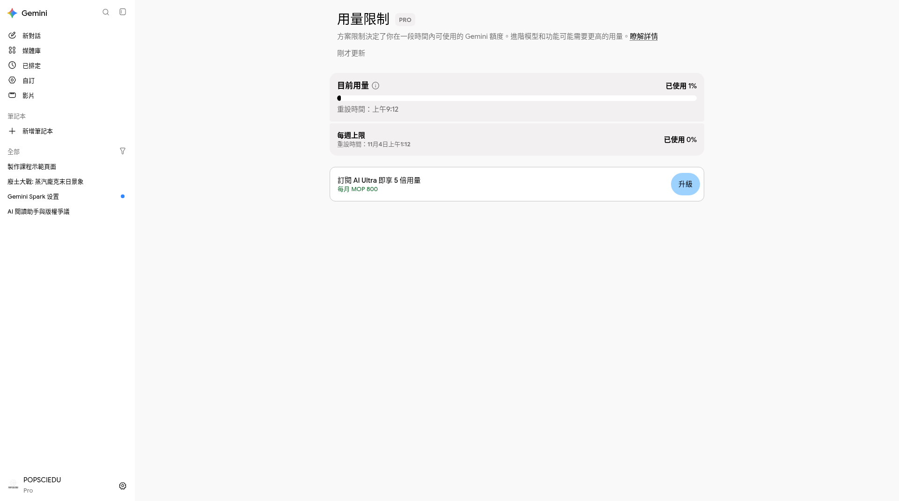
Paid／示範曾用 Pro；本課主線 FREE 用量頁 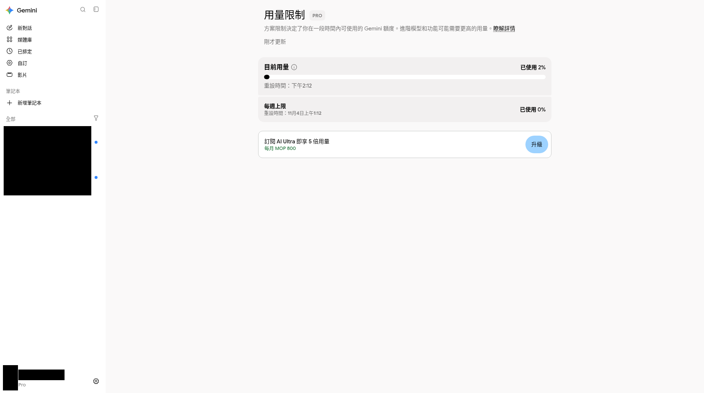
FREE 功能線 網頁版 · FREE 功能線（popsciedu）；個資已遮黑 示範帳訂閱徽章可能與 FREE 功能線不一致（以功能線／使用者指定分工為準：popsciedu＝FREE、wayneleong＝Plus、awwgj4p65t＝Pro）。
CASE B · 聊天整理導賞稿
新對話，貼角色＋規則＋全文
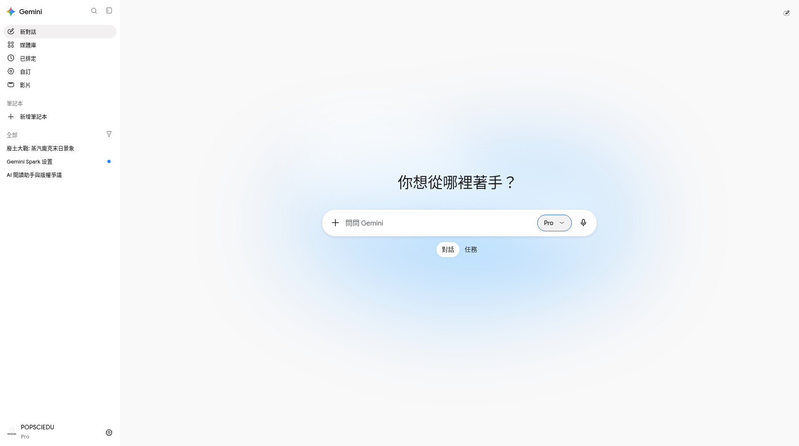
Free 對照 輸入框 待補 · 整理回覆應出現：f05-free-prompt-tour.png做一次抓錯對照
CASE C · 多模態／產圖
上傳學習重點或示意圖，先問「你看到什麼」
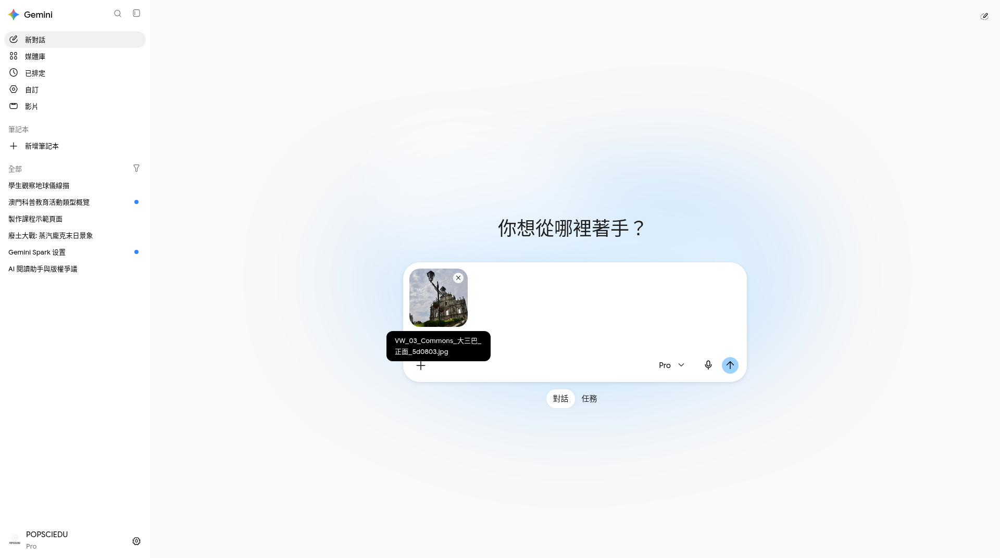
Free 對照 圖片縮圖 產圖（若 Free 開放）或對照課程示意
Free 對照 課程示意／非 Gemini 實產 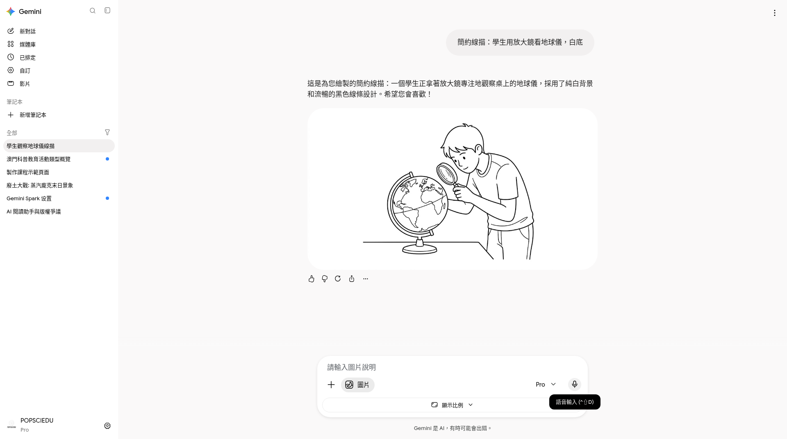
Paid／示範曾用 Pro；本課主線 FREE Gemini 產圖（若有）

CASE D · Deep Research（視額度）
嘗試開啟 DR；不行就改手動來源＋聊天
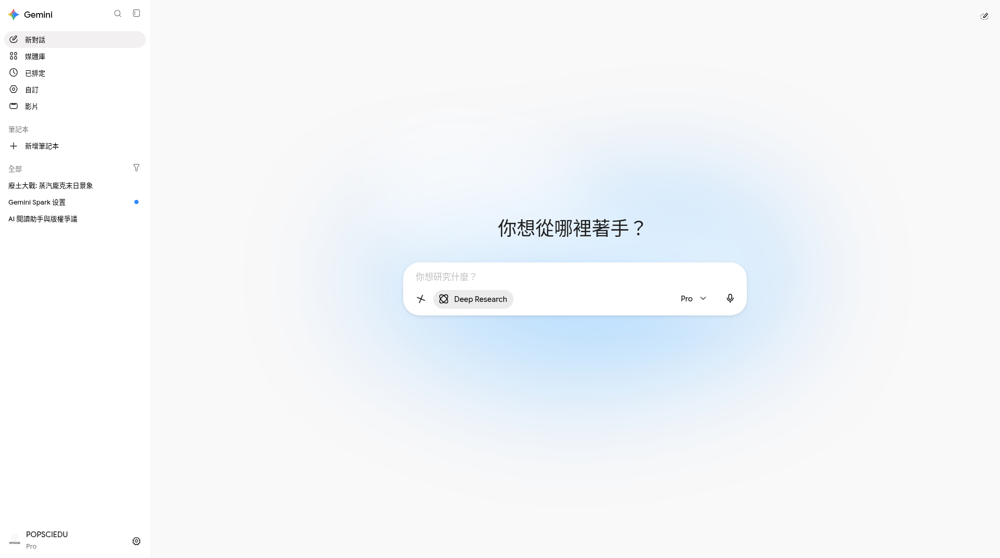
Paid／示範曾用 Pro；本課主線 FREE 入口 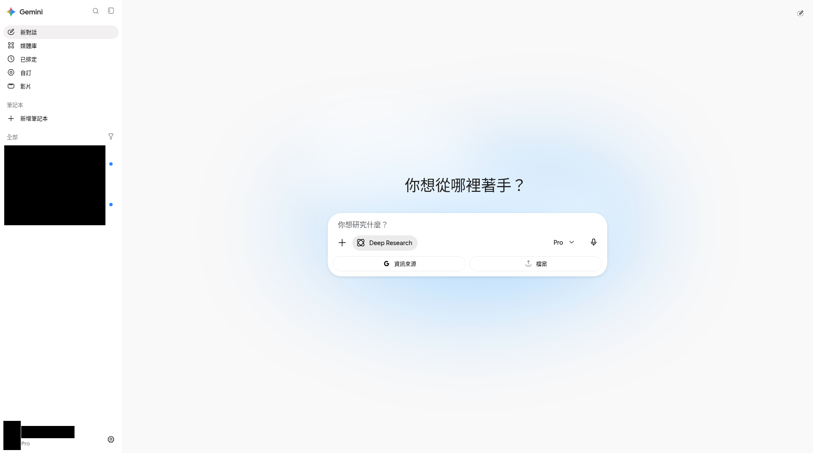
FREE 功能線 網頁版 · FREE 功能線（popsciedu）；個資已遮黑 示範帳訂閱徽章可能與 FREE 功能線不一致（以功能線／使用者指定分工為準：popsciedu＝FREE、wayneleong＝Plus、awwgj4p65t＝Pro）。
CASE E · Canvas 單頁
開 Canvas，生成家庭導賞單頁
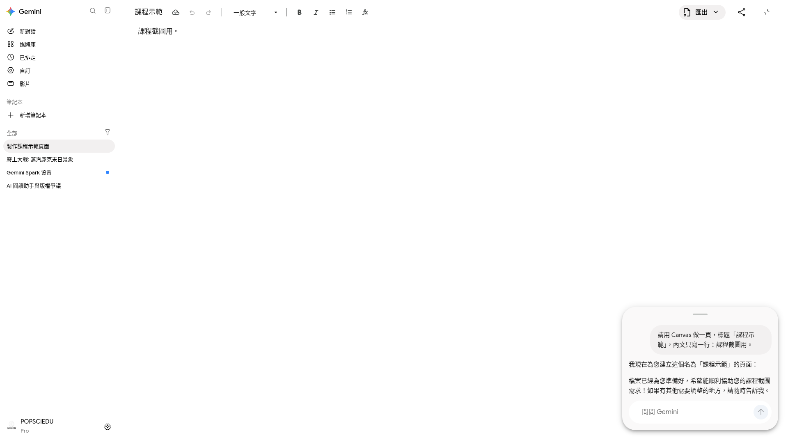
Paid／示範曾用 Pro；本課主線 FREE 工作區 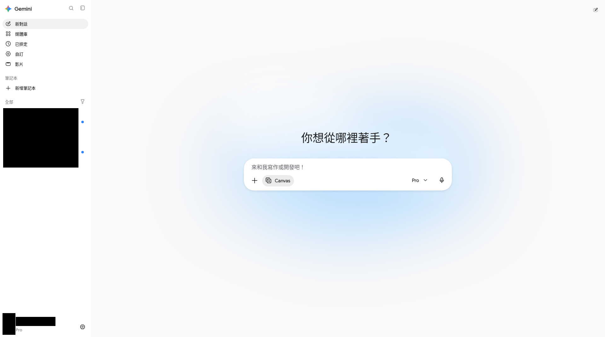
FREE 功能線 網頁版 · FREE 功能線（popsciedu）；個資已遮黑 示範帳訂閱徽章可能與 FREE 功能線不一致（以功能線／使用者指定分工為準：popsciedu＝FREE、wayneleong＝Plus、awwgj4p65t＝Pro）。
選取改寫一段
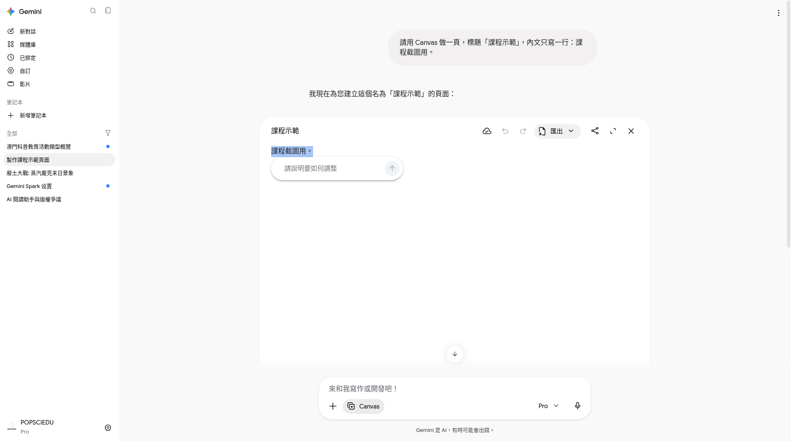
Paid／示範曾用 Pro；本課主線 FREE 浮動編輯
CASE F · Skill @museum-meeting-notes
建立 Skill
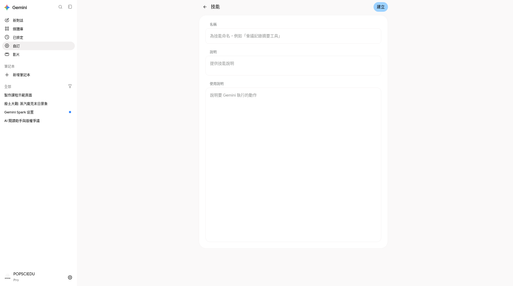
Paid／示範曾用 Pro；本課主線 FREE 建立 Skill @ 呼叫只貼逐字稿
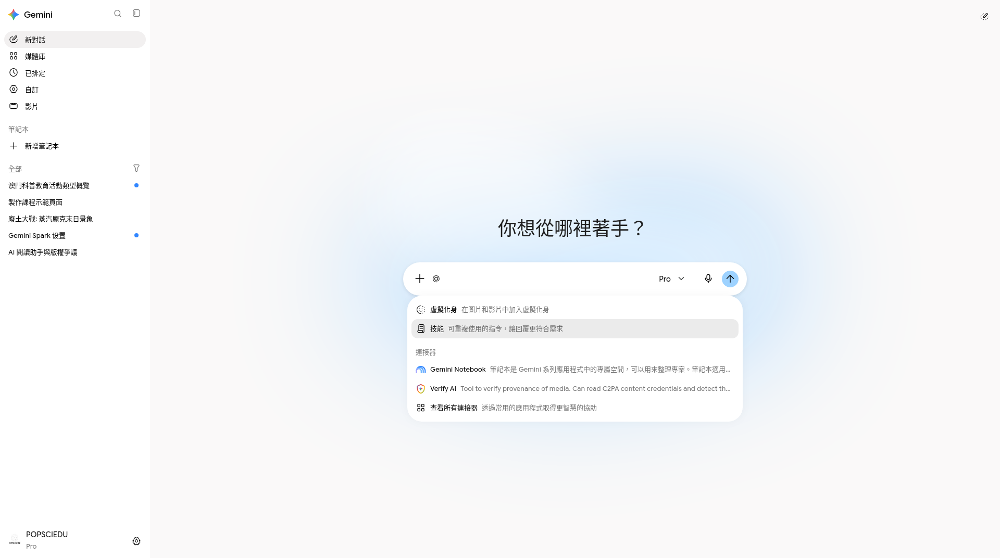
Paid／示範曾用 Pro；本課主線 FREE @ 呼叫 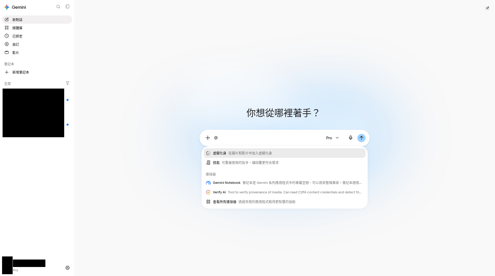
FREE 功能線 網頁版 · FREE 功能線（popsciedu）；個資已遮黑 示範帳訂閱徽章可能與 FREE 功能線不一致（以功能線／使用者指定分工為準：popsciedu＝FREE、wayneleong＝Plus、awwgj4p65t＝Pro）。
CASE G · Gemini Notebook（視地區）
若 unsupported：改用網頁聊天上傳同一批來源，仍練習「對來源＋抓錯」。
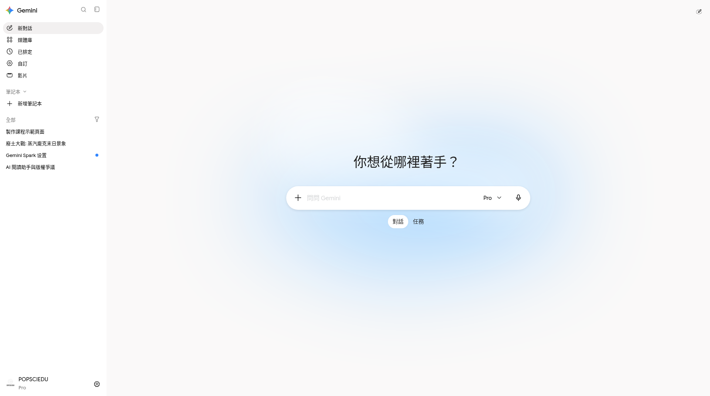
CASE H · 連接與隱私
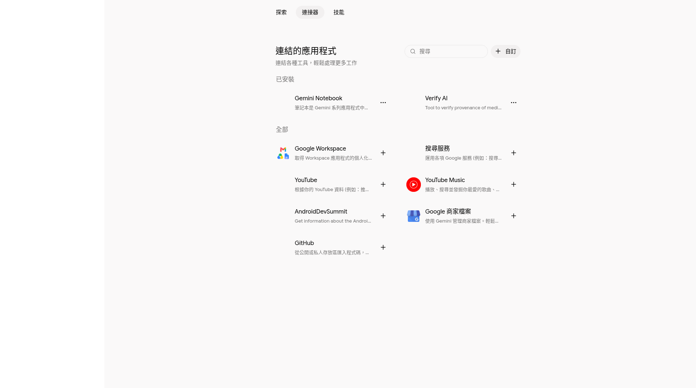
CASE I · Extension 選裝（加分）
主線完成後，可選：Gemini in Chrome 側欄摘要分頁，或 Comet／商店安裝一個匯出／側欄工具——先讀權限。
實作測驗
本頁實作範圍是？